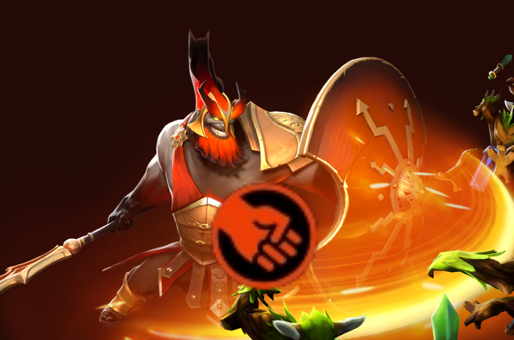
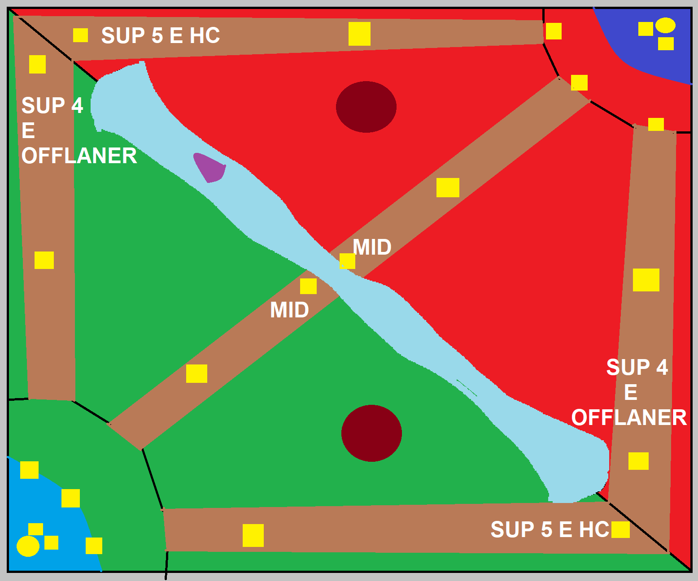

-

Força é uma medida de dureza e resistência de um herói. Força determina o máximo de vida e regeneração de vida de um herói, e adicionalmente resistência mágica caso for um herói de Força. Heróis com Força como atributo principal podem ser difíceis de matar, então eles geralmente têm as funções de iniciador e de resistência, iniciando lutas e recebendo a maior parte do dano de ataques inimigos.
-
Agilidade é um dos três atributos primários. Fornece velocidade de movimento, velocidade de ataque
e armadura para todos os heróis. Os heróis de Agilidade também ganham dano de ataque por ponto de Agilidade.
-
Inteligência é um dos três atributos primários. Fornece mana, regeneração de mana e
amplificação mágica para todos os heróis. Os heróis de Inteligência também ganham dano de ataque por ponto de Inteligência.
-

Os heróis em DOTA 2 estão divididos pelas suas funções, que são definidas por
uma combinação de atributos, habilidades, itens e a forma como esse conjunto vai afetar a partida.


 Hérois do Dota 2, suas Informações e Histórias
Hérois do Dota 2, suas Informações e Histórias